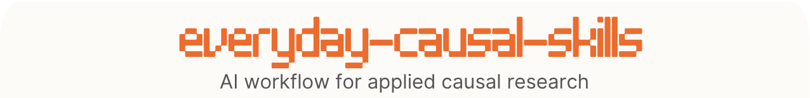

Optional step
1
Plan
The agent helps you plan your causal analysis
/causal-planner
/causal-exercises
Practice
Create realistic data examples to practice
2
Choose method
AI helps you implement the right method and tools in R and Python
/causal-experiments
/causal-did
/causal-iv
/causal-rdd
/causal-sc
/causal-matching
/causal-timeseries
/causal-hte
/causal-dag
3
Stress-test
The agent checks the validity and robustness of your analysis
/causal-auditor
4
Translate
It turns the effect into money: ROI, breakeven, ship-or-kill
/causal-roi
5
Report
It helps you interpret and explain results
/causal-report